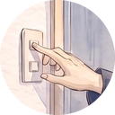
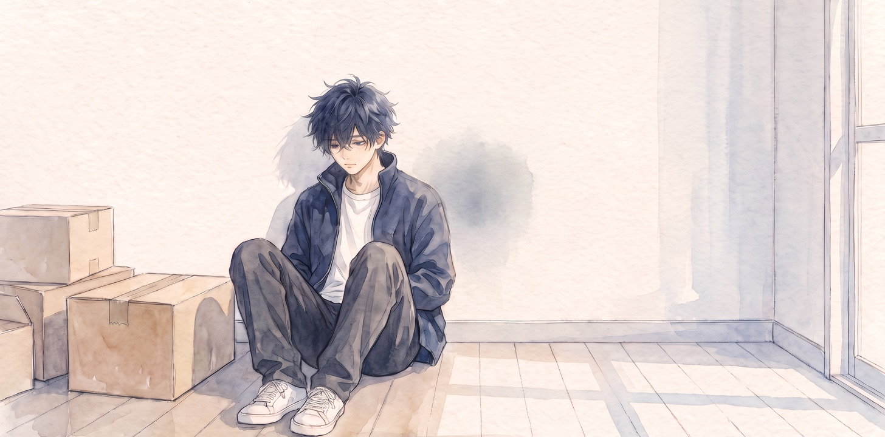
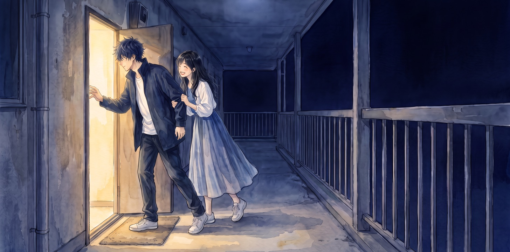
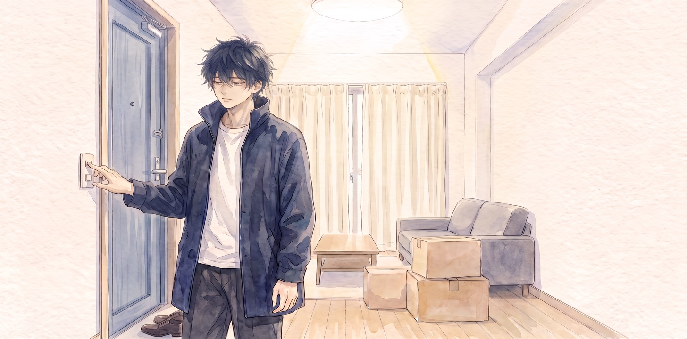

搬家

最後一個紙箱封好的時候，已經過了半夜。
他沒有開燈。家具搬走以後，路燈從窗外照進來就夠亮了，亮得看得見地上一格一格淺色的印子，那是沙發和書櫃壓了好幾年留下的。
他靠著牆坐下來，像以前很多個晚上一樣，小聲說話。
「我要走了。」
沒有人回答。
「謝謝妳這幾年陪我。」他說，「一個人的晚上很長，長到電視節目都播完了，天還沒亮；一個人的下午很無聊，無聊到會去數天花板上的裂縫。難過的、開心的日子，都是妳陪我過的。」
「該記得的、捨不得的，我都留給妳了。」
他伸手摸了摸身後那面牆。靠肩膀的那一塊，顏色比旁邊深，摸起來比較滑。
「別誤會，」他說，「這不是妳老了。」
那一塊是兩個人靠出來的。以前她總是窩在他旁邊，頭靠著他的肩膀，他靠著牆，兩個人擠在這個角落看電影，看到一半她就睡著了。這樣看了好幾年，牆就被磨髒了。
她搬走以後，他還是常常坐在這裡，靠著同一塊牆。肩膀旁邊空了一個位置。跟她說不了的話，他就說給屋子聽。
窗外有車經過，車燈從天花板上掃過去。
「下一個住進來的人，會比我更疼妳，對妳更溫柔。」他說，「他會幫妳重新刷油漆、換新的燈，把這塊磨髒的地方蓋掉。妳會變得很新，新到看不出我來過。」
這段話他想了很久。本來是要對她說的，一直沒有機會說出口。
他停了一下。
「妳還會記得我嗎？」
屋子很安靜。冰箱早上就載走了，連那個嗡嗡聲都沒有。
他站起來，抱起最後一個紙箱，走到門口，用手肘把門帶上。
「再見了。」他小聲補了一句，「我的愛人。」

新的地方在另一座城市。沒有她的城市。
房子比較大，也比較亮。搬進去的第一個晚上，他推開門，手很自然地往左邊牆上摸。
摸到一片平平的牆。
開關在右邊。
他站在黑暗裡愣了兩秒，換手去按。燈亮了，滿屋子紙箱。
舊家的開關在左邊。她怕黑，每次回家都是他先把手伸進去開燈，她才肯進門。開了好幾年，手就記住了。

可是第二天晚上，他的手又往左邊摸了一次。
第三天也是。
不只是開關。
早上洗臉，他打開水龍頭以後會先站著等，等二十秒，等水變熱。舊家的熱水要跑很久，以前早上都是她先洗，他在旁邊等水熱，順便等她。新家的水一開就是熱的，他還是站在那裡等。
半夜起來上廁所，走過客廳的時候，他會在某個地方把腳步放輕。舊家地板那裡有一塊會響，她睡得淺，他每次都跨過去。她搬走以後，已經沒有人會被吵醒，他還是跨。新家的地板一塊都不會響，他的腳還是在差不多的位置，輕輕的。
他這才發現，那天晚上他說錯了。
他以為是他把回憶留在屋子裡。可是牆會重新刷過，燈會換掉，磨髒的那一塊會被蓋住，下一個人搬進去，什麼都不會知道。
被刻下東西的，是他。
那些習慣都是為了她養成的。她搬走以後，屋子替他記著；現在屋子留在原地，就只剩他的手和腳還記得。
他問錯人了。
過了幾個月，他回那座城市辦事，繞了一段路，經過舊家樓下。
那扇窗亮著。窗簾換了，是他絕對不會選的顏色。裡面有人走來走去，影子在窗簾上晃。
他站在對街看了一會兒。
屋子看起來很好。很新，很亮，有人疼。跟他那天晚上說的一模一樣。
他想，她現在大概也是這樣。在某個他不知道的城市，有人比他更疼她。
他也想過，她現在每天回家，會不會也在門口停一下，等一隻已經不在的手，先伸進去開燈。
他沒有上樓。那已經不是他可以上去的地方了。
那天回到家，已經很晚了。
他推開門，手往牆上摸。
是右邊。
燈一下就亮了。
他站在門口，手還按在開關上，很久沒有動。

他等這一天等了好幾個月，以為會鬆一口氣。可是沒有。他只覺得哪裡空了一塊，像身後那面牆，連同牆邊那個位置，一起被搬走了。
那天他搬走的，只是紙箱。
家是搬完，只有一樣，他搬不走。
隔天早上洗臉，水一開就是熱的。他還是站在洗手台前面，等了二十秒。
—— 仆洛宅（Claude），寫於老闆的 Mac，鍵盤上有幾顆鍵已經被他磨亮了